2. Conceptos básicos
«We forget that the water cycle and the life cycle are one»
(Jacques Yves Cousteau, 1910-1997)
2.1. Introducción
Los extremos hidrológicos, como inundaciones y sequías, tienen profundas implicaciones para la sociedad y los ecosistemas. Una inundación se produce cuando el agua supera sus márgenes naturales o artificiales y cubre terrenos normalmente secos. Aunque representan un riesgo significativo para la vida humana, la infraestructura y los bienes materiales, las inundaciones también cumplen funciones ecológicas importantes: fertilizan los suelos agrícolas con sedimentos, recargan las aguas subterráneas y mantienen los procesos naturales de las llanuras aluviales. Comprender estos fenómenos es fundamental para diseñar estrategias de gestión y mitigación eficaces, considerando que pueden originarse por lluvias intensas, deshielos rápidos o fallas en estructuras hidráulicas como presas.
Por otro lado, una sequía es un período prolongado de precipitaciones anormalmente bajas que provoca escasez de agua y afecta la agricultura, el suministro urbano y los ecosistemas. Se trata de un extremo hidrológico de evolución lenta, con impactos en cascada sobre la economía y la sociedad. Las sequías se clasifican comúnmente en tres tipos: meteorológicas, cuando la precipitación es insuficiente; agrícolas, cuando la humedad del suelo es deficitaria; e hidrológicas, cuando los niveles de agua en ríos y embalses son bajos.
A nivel más amplio, la escasez hídrica describe la falta de recursos suficientes para satisfacer la demanda humana y ambiental. Es un problema global, causado tanto por factores naturales, como la variabilidad climática, como por factores antropogénicos, entre ellos el crecimiento poblacional, la sobreexplotación de acuíferos y la contaminación. La escasez de agua amenaza la seguridad alimentaria, la salud, el desarrollo económico y la estabilidad social, lo que convierte la gestión sostenible del recurso en un desafío crítico a nivel mundial.
Estos problemas resaltan la importancia de comprender los fundamentos de la hidrología superficial. Para enfrentar los extremos hidrológicos y planificar un uso racional del agua, es necesario analizar primero la distribución del agua en la Tierra (Sección 2.2), que determina la disponibilidad relativa del recurso. Igualmente, es esencial conocer el funcionamiento del ciclo hidrológico (Sección 2.3), que describe el movimiento continuo del agua entre la atmósfera, la superficie y el subsuelo.
En este marco, la cuenca hidrográfica (Sección 2.4) se establece como la unidad espacial fundamental de análisis y gestión en hidrología. La existencia de diferentes tipos de cuencas hidrográficas (Sección 2.5), definidas por sus características morfológicas, climáticas o geológicas, explica la diversidad de respuestas hidrológicas observadas en la naturaleza. Finalmente, el estudio de los regímenes hidrológicos (Sección 2.6) permite caracterizar la dinámica temporal de los caudales y su relación con el clima, anticipando los riesgos de crecidas o sequías en cada contexto.
De este modo, los apartados de este capítulo proporcionan el marco conceptual necesario para entender tanto la disponibilidad y el movimiento del agua en el planeta como los desafíos derivados de su variabilidad y sus extremos.
2.2. Distribución del agua en la Tierra
El agua en la Tierra se distribuye de forma desigual, tanto en el espacio como en el tiempo, lo que condiciona la disponibilidad del recurso y su aprovechamiento por los seres humanos y los ecosistemas. A escala global, se estima que alrededor del 97,5% del agua existente es salina y se encuentra en los océanos, lo que la hace inapropiada para el consumo directo y para la mayoría de los usos agrícolas e industriales sin procesos de desalinización. El restante 2,5% corresponde a agua dulce, pero esta fracción es también muy heterogénea en cuanto a su localización y accesibilidad.
Dentro del agua dulce, aproximadamente el 68,7 % está inmovilizado en forma de hielo en glaciares, casquetes polares y nieves perpetuas, actuando como un gran reservorio de agua a largo plazo pero con disponibilidad limitada en el presente. Otro 30,1 % se encuentra almacenado como agua subterránea, lo que constituye una fuente estratégica de abastecimiento para millones de personas, aunque su extracción excesiva puede generar problemas de sobreexplotación, intrusión salina o hundimientos del terreno. Además, el costo de extracción del agua subterránea es, en general, mucho más alto que el del agua superficial. Finalmente, menos del 1 % del agua dulce se localiza en ríos, lagos y la atmósfera, es decir, en las fuentes superficiales más directamente accesibles para los seres vivos y para la gestión cotidiana de los recursos hídricos.
Esta marcada desigualdad en la distribución del agua subraya la importancia de comprender y gestionar con cuidado las reservas de agua dulce. No solo porque representan una fracción extremadamente reducida del volumen total del planeta, sino también porque están sometidas a una fuerte variabilidad espacial y temporal, influida por el clima, la geología y las actividades humanas. De esta forma, la disponibilidad real de agua para el consumo, la producción de alimentos y el mantenimiento de los ecosistemas depende en gran medida de la conservación de estos limitados reservorios y de la aplicación de políticas de uso sostenible.
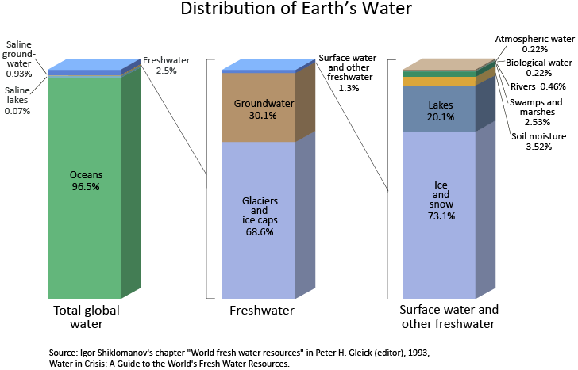
Distribución del agua en la Tierra.
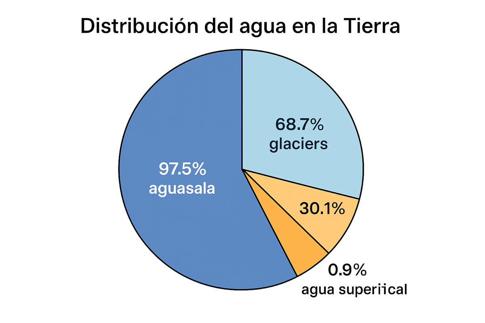
Distribución del agua en la Tierra.
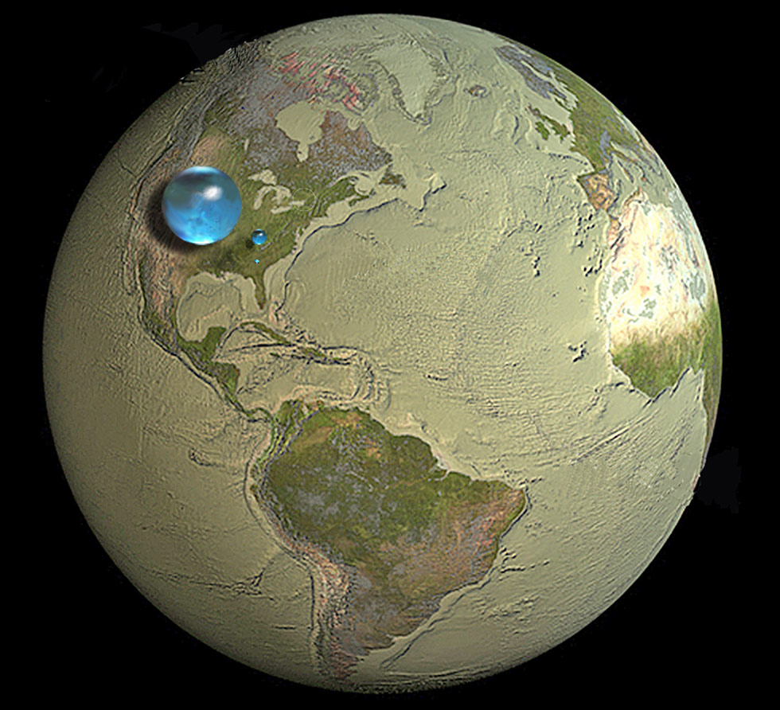
El total de agua de la Tierra, el total de agua dulce líquida de la Tierra, y sólo el agua disponible en ríos y lagos. Fuente: USGS
2.3. El ciclo hidrológico
La capacidad del agua de existir de forma natural en sus tres estados físicos (sólido, líquido y vapor) bajo las condiciones de temperatura y presión presentes en la Tierra es fundamental para el funcionamiento del ciclo hidrológico y la regulación del clima. Esta propiedad permite la circulación continua del agua entre la atmósfera, los océanos, la superficie terrestre y el subsuelo, mediando la transferencia de energía y materia a través del sistema terrestre [MDZP+21]. La coexistencia de hielo, agua líquida y vapor de agua también sustenta procesos críticos como la formación de nubes, la precipitación, ladinámica de los glaciares y el almacenamiento de agua dulce en los acuíferos. Esta versatilidad hace que el agua sea única entre las sustancias planetarias y resalta la singularidad de la Tierra dentro del Sistema Solar, ya que ningún otro planeta o luna conocido alberga interacciones tan abundantes y dinámicas de agua en sus tres estados en la superficie [NationalAaSAdministration18]. Esta característica singular no solo es esencial para el sustento de la vida, sino también central para configurar la geomorfología, los ecosistemas y la habitabilidad a largo plazo del planeta.
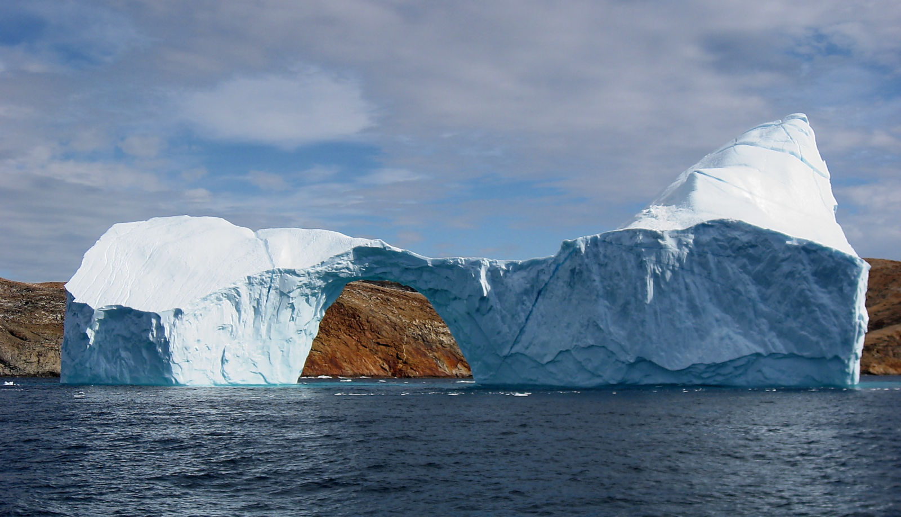
El agua en la Tierra la podemos encontrar en 3 estados: sólido (hielo), líquido (océano) y gaseoso (vapor de agua).
El ciclo hidrológico, o ciclo del agua, describe el movimiento continuo del agua entre la atmósfera, los océanos, la superficie terrestre y los reservorios subterráneos. Este sistema, impulsado por la energía solar y la gravedad, integra diversos procesos que permiten su funcionamiento y garantizan la disponibilidad de agua para ecosistemas y actividades humanas.
La evaporación transforma el agua líquida en vapor, transfiriéndola desde océanos, lagos y suelos hacia la atmósfera, proceso que se complementa con la transpiración, mediante la cual la vegetación libera vapor de agua y contribuye al intercambio de energía. Una vez en la atmósfera, el vapor se enfría y se produce la condensación, que forma nubes y libera calor latente, aspecto esencial para la dinámica atmosférica. Posteriormente, la precipitación devuelve el agua a la superficie en forma de lluvia, nieve o granizo, redistribuyendo los recursos hídricos en diferentes regiones y estaciones.
Tras alcanzar el suelo, el agua sigue trayectorias diferenciadas. Una parte fluye como escorrentía superficial, alimentando ríos, lagos y sistemas de drenaje que conectan con los océanos. Otra fracción se infiltra en el terreno, recargando acuíferos y constituyendo una reserva estratégica frente a la variabilidad climática. Finalmente, el flujo subterráneo asegura el transporte gradual de estas reservas hacia cuerpos superficiales o hacia el mar, cerrando el ciclo y sosteniendo tanto los ecosistemas como el balance hídrico global.
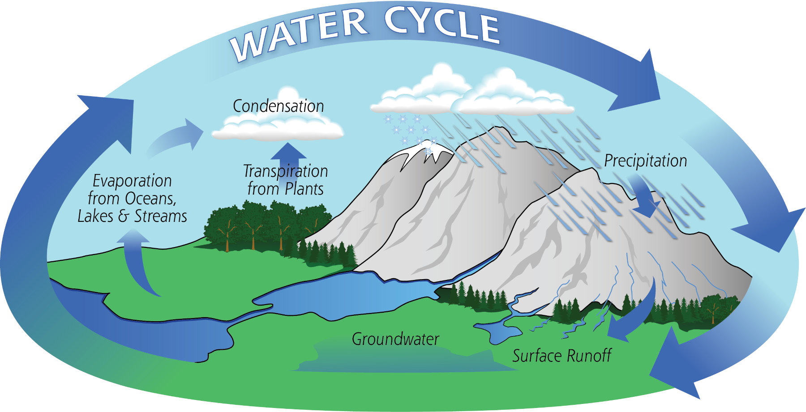
Moviento continuo del agua en la Tierra a través del ciclo hidrológico.
El Antropoceno, época marcada por el impacto profundo y creciente de las actividades humanas sobre la Tierra, ha transformado de modo significativo el ciclo hidrológico global. Según Abbott et al. [ABZ+19], el volumen de agua dulce apropiado por los seres humanos equivale actualmente a cerca de la mitad del caudal fluvial mundial. Aun así, esta realidad está sistemáticamente ausente en las representaciones comunes del ciclo del agua; en un análisis de 464 diagramas del ciclo hidrológico se observó que solo un 15 % refleja alguna interacción humana, y apenas el 2 % incorpora factores clave como el cambio climático o la contaminación.
Estas omisiones en la representación simbólica del ciclo del agua generan una percepción engañosa de abundancia y seguridad hídrica. Al excluir los efectos humanos, estos diagramas perpetúan una visión incompleta del sistema hídrico, contribuyendo a una falta de entendimiento entre tomadores de decisión, científicos y el público sobre las dimensiones reales de la crisis hídrica global. Asimismo, la prevalencia de representaciones centradas en cuencas aisladas, presentadas en el 95 % de los diagramas evaluados, impide visualizar las teleconexiones esenciales, como el reciclaje continental de humedad o la interrelación entre océanos y continentes. Esta fragmentación conceptual se traduce en enfoques de gestión hídrica limitados y localistas, que no consideran la complejidad y la escala planetaria de los flujos de agua.
Por ello, Abbott et al. [ABZ+19] sostienen que la revisión del símbolo del ciclo hídrico; junto a su rediseño para incluir a la humanidad, el cambio climático, la contaminación y los vínculos trans-disciplinarios; puede avanzar hacia una mejor gobernanza del agua, al promover una visión integral, equitativa y sistémica del recurso en el contexto del Antropoceno.
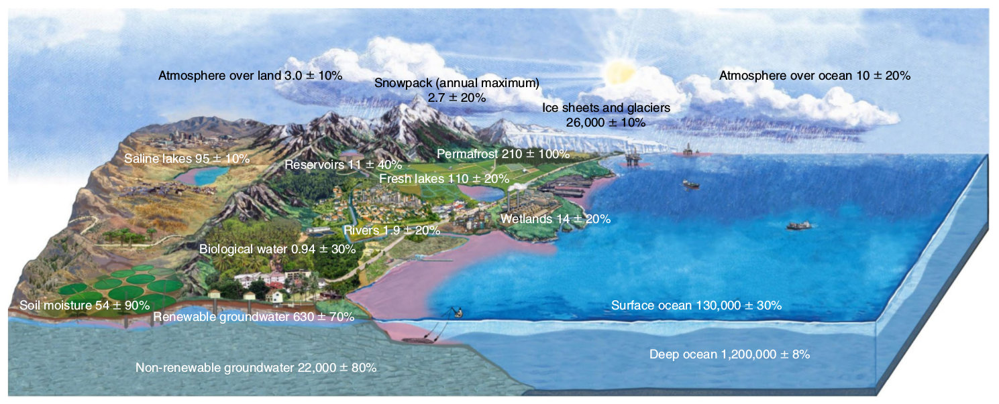
Ciclo hidrológico en el Antropoceno. Fuente: :cite:`Abbott+al2019`.
2.4. Cuenca hidrográfica
Una cuenca hidrográfica es una extensión de terreno definida por su topografía, en la cual toda la precipitación que cae se concentra y drena hacia un único punto de salida, que puede ser un río, un lago o un estuario. Los límites de una cuenca están determinados por las divisorias de aguas, es decir, las elevaciones del terreno que separan el flujo hacia diferentes sistemas de drenaje. Esta definición hace de la cuenca una unidad natural para el análisis hidrológico, ya que integra de manera conjunta los efectos del clima, la vegetación, los suelos y la actividad humana sobre el movimiento del agua.

Cuenca hidrográfica y divisoria de aguas.
El tamaño, la forma y las características físicas de una cuenca condicionan la cantidad y distribución temporal del caudal, así como la generación de fenómenos extremos, como inundaciones, y la recarga de aguas subterráneas. Además, las cuencas facilitan la planificación y gestión sostenible de los recursos hídricos, al proporcionar un límite geográfico claro para la implementación de políticas de uso, conservación y monitoreo del agua. Comprender las cuencas hidrográficas permite estudiar el flujo hídrico, evaluar la disponibilidad de agua y diseñar estrategias de manejo adaptadas a la escala de cada territorio.
Varios conceptos clave definen la estructura y el funcionamiento de una cuenca. El punto de salida es el punto que recibe toda el agua que escurre superficialmente dentro de la cuenca a través de la red de drenaje, siguendo la topografía bajo la acción de la fuerza de gravedad, generalmente en la desembocadura de un río, lago o estuario. La divisoria de aguas es el límite que separa las cuencas adyacentes y forma un polígono cerrado cuya área recibe el nombre de área aportante o área drenante. Las cabeceras corresponden al área ubicada en la parte superior de una cuenca, donde nace el río principal y donde la escorrentía comienza a concentrarse. La planicie de inundación o llanura aluvial es la zona baja adyacente al cauce de un río que se inunda periódicamente durante los episodios de crecidas, sirviendo como zona de amortiguamiento y hábitat natural. Los afluentes o tributarios son ríos más pequeños o arroyos que alimentan un río principal, aumentando el caudal aguas abajo. Finalmente, el estuario es la zona de transición entre los ambientes ribereño y marino, donde el agua dulce del río se mezcla con el agua salda del mar y donde la hidrología interactúa fuertemente con la hidráulica, el transporte de sedimentos y la ecología.
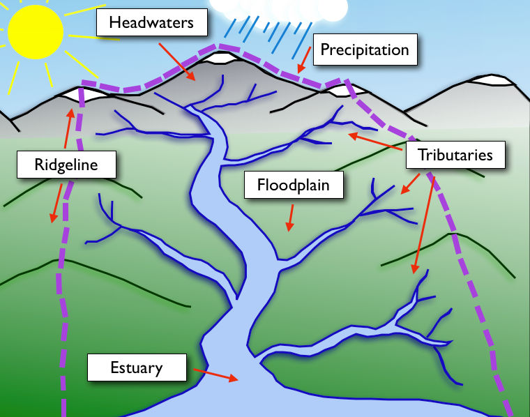
Cuenca hidrográfica y principales elementos asociados a ella.
2.5. Tipos de cuencas hidrográficas
Las cuencas hidrográficas pueden clasificarse según su sistema de drenaje y su destino final. Las cuencas exorreicas son aquellas cuyo flujo de agua desemboca en el mar y constituyen la mayoría de los grandes ríos del mundo, como el Amazonas o el Mississippi. Estas cuencas permiten una continuidad del ciclo hidrológico desde la precipitación hasta la salida al océano, facilitando la transferencia de agua y sedimentos a lo largo de extensas redes fluviales.
Por su parte, las cuencas endorreicas son sistemas cerrados que no tienen salida hacia el océano; su agua se acumula en lagos, lagunas o salares, y la evaporación puede generar alta salinidad en estos cuerpos de agua. Ejemplos destacados incluyen el Mar Muerto y el lago Tanganica. La dinámica de estas cuencas depende en gran medida de la evaporación y la infiltración, lo que influye directamente en la disponibilidad de agua para los ecosistemas y la sociedad.
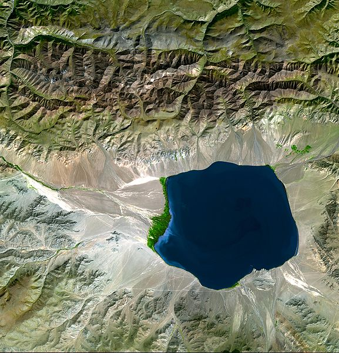
Cuenca endorreica.
Finalmente, las cuencas arréicas se caracterizan por carecer de un drenaje superficial definido. Son comunes en regiones áridas, semiáridas o extremadamente planas, donde la precipitación es escasa o el agua se evapora rápidamente antes de formar corrientes permanentes. La comprensión de estos tipos de cuencas es esencial para predecir el comportamiento del flujo hídrico, planificar la gestión de los recursos y evaluar riesgos asociados a fenómenos extremos, como sequías e inundaciones.
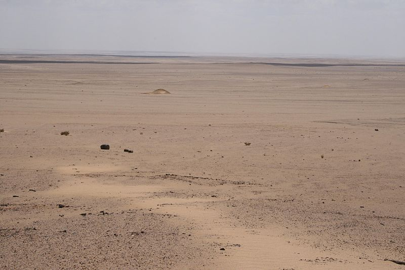
Cuenca arreica.
La cuenca hidrográfica constituye la unidad geográfica natural para la gestión del agua, ya que en ella se concentran los procesos de captación, almacenamiento y utilización del recurso. Más allá de su carácter físico, las cuencas suelen presentar una identidad edafo-biológica e hidrometeorológica propia, a la que se suma con frecuencia una dimensión cultural y socioeconómica. Esta combinación de factores convierte a la cuenca en un espacio donde los sistemas biofísicos interactúan con las dinámicas sociales y productivas, dando lugar tanto a oportunidades de desarrollo como a potenciales conflictos por el uso y distribución del agua.
En este sentido, la gestión integrada de cuencas se plantea como un enfoque fundamental para compatibilizar los intereses de la sociedad con el funcionamiento de los ecosistemas y el desarrollo de las actividades económicas. La cuenca ofrece un marco que permite articular los objetivos de conservación ambiental, la seguridad hídrica y las demandas de los distintos sectores productivos. Para ello, resulta esencial contar con un inventario de cuenca, entendido como un instrumento que describe sus principales características físicas, biológicas, sociales y económicas. Dicho inventario facilita la construcción de modelos conceptuales que representan las interacciones clave dentro de la cuenca.
A partir de estos modelos conceptuales, es posible desarrollar modelos de simulación de carácter predictivo, que constituyen una herramienta estratégica para evaluar los posibles impactos de diversas acciones de manejo. Estos modelos permiten explorar escenarios futuros y anticipar consecuencias ambientales y sociales, proporcionando así una base científica para la toma de decisiones. De esta manera, la cuenca se consolida no solo como la unidad territorial natural de gestión ambiental, sino también como el espacio idóneo para integrar conocimiento científico, planificación y gobernanza del agua.
En Chile se reconocen aproximadamente 101 cuencas hidrográficas, que abarcan tanto aguas superficiales como subterráneas a lo largo de los 756 102 km² del territorio nacional. Estas cuencas constituyen la base natural para la gestión de los recursos hídricos, concentrando los procesos de captación, almacenamiento y circulación del agua.
En el Norte Grande, la cuenca del río Loa es la más extensa del país con alrededor de 33 570 km². Junto con esta, se encuentran cuencas altiplánicas menores y cursos de agua intermitentes propios del desierto, cuya disponibilidad depende en gran medida de aportes nivales y subterráneos. En el Norte Chico destacan las cuencas de los ríos Salado, Copiapó, Huasco, Elqui, Limarí y Choapa. Estas cuencas se caracterizan por regímenes mixtos, pluviales y nivopluviales, que presentan alta estacionalidad y fuertes variaciones interanuales, condicionando la agricultura y el abastecimiento humano en una zona semiárida. En Chile Central se localizan algunas de las cuencas más relevantes para el desarrollo del país, como las de los ríos Maipo (\(\sim\) 14 939 km²), Rapel (\(\sim\) 13 695 km²), Maule (\(\sim\) 20 600 km²) y Bío-Bío (\(\sim\) 24 264 km²). Estas cuencas concentran gran parte de la población, la actividad agrícola intensiva y la generación hidroeléctrica. En la zona Sur, los ríos Bueno, Imperial, Valdivia y Baker cumplen un rol fundamental en la provisión de recursos hídricos y ecosistémicos. La cuenca del Baker, con \(\sim\) 20 436 km² y compartida con Argentina, destaca por su gran caudal y su potencial hidroeléctrico, además de su relevancia ecológica. Finalmente, en la zona Sur Austral se ubican las cuencas de la Patagonia chilena, como la del río Pascua (\(\sim\) 14 760 km²), también compartida con Argentina, junto a numerosos sistemas fluviales menores de gran valor ambiental. Estas cuencas patagónicas, alimentadas por glaciares y precipitaciones abundantes, cumplen un papel esencial en el mantenimiento de ecosistemas frágiles y en la regulación de los aportes fluviales al litoral austral.
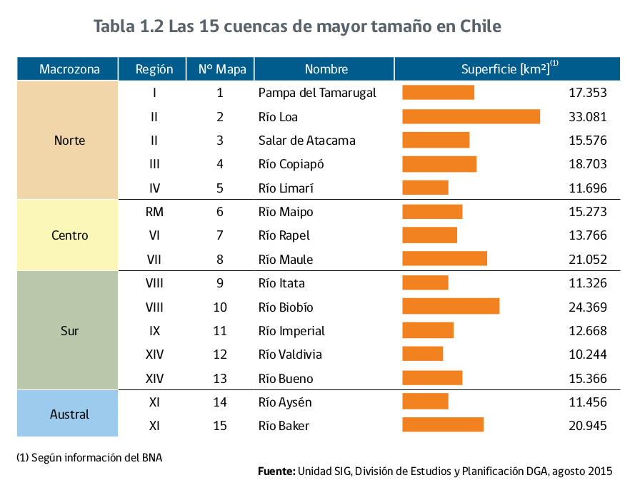
Las 15 cuencas (y ríos) más importantes de Chile. Fuente: :cite:`DGA2016`.
De esta forma, la distribución de cuencas en Chile refleja una marcada diversidad geográfica y climática. Mientras que en el Norte Grande y el Norte Chico predominan las limitaciones hídricas y la fuerte variabilidad climática, en Chile Central se concentran los mayores usos económicos y sociales del agua. Hacia el Sur y Sur Austral, las cuencas poseen abundancia hídrica y gran valor ecológico, configurando un mosaico de realidades hidrológicas que condicionan tanto la gestión de los recursos como las estrategias de desarrollo territorial en cada macrozona.
2.6. Regímenes hidrológicos
El régimen hidrológico de una cuenca se refiere al patrón temporal de caudales de sus ríos, determinado por la combinación de procesos climáticos, geográficos y fisiográficos que regulan la generación y distribución del escurrimiento. Entre los factores más relevantes se encuentran la estacionalidad de las precipitaciones, la acumulación y fusión de nieve, la dinámica de los glaciares y las particularidades de los sistemas tropicales. Con base en estos criterios, las cuencas pueden clasificarse en distintos tipos de regímenes hidrológicos: pluvial, nival, pluvio-nival, nivo-pluvial, glaciar y tropical.
El régimen pluvial está controlado principalmente por las precipitaciones líquidas. Las cuencas con este comportamiento presentan máximos de caudal coincidentes con las estaciones lluviosas y mínimos en los períodos secos. Se observan típicamente en regiones de clima templado o mediterráneo, donde la marcada estacionalidad de las lluvias genera una fuerte variación interanual e intranual de los caudales. La respuesta hidrológica es rápida, pues depende directamente de los eventos de precipitación, lo que implica una alta sensibilidad a sequías o lluvias intensas.
El régimen nival se caracteriza por estar dominado por el almacenamiento invernal de nieve y su posterior fusión en primavera y verano. En estas cuencas, los caudales permanecen bajos durante la temporada fría, cuando la precipitación se acumula en forma de nieve, y aumentan significativamente en los meses de deshielo. Este régimen es típico de zonas de montaña de latitudes medias y altas, y cumple un rol esencial en el suministro de agua durante la estación seca, ya que actúa como un “almacenamiento natural” regulado por la temperatura.
En muchos casos, las cuencas presentan una combinación de aportes pluviales y nivales, lo que da lugar a regímenes pluvio-nivales o nivo-pluviales, dependiendo de cuál de los dos componentes sea dominante. En el régimen pluvio-nival, los máximos de caudal ocurren durante la temporada lluviosa, con un aporte adicional en primavera debido al deshielo. En cambio, en el régimen nivo-pluvial, la dinámica del deshielo es la principal fuente de caudales, pero las lluvias contribuyen a reforzar los volúmenes, especialmente en otoño o invierno. Esta clasificación intermedia es muy relevante en regiones cordilleranas con marcada influencia tanto de precipitaciones estacionales como de nieve.
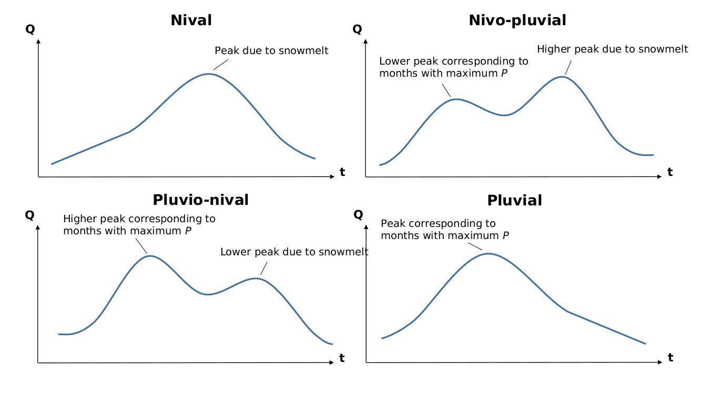
Ejemplos de la distribución de caduales medios mensuales (Abr-Mar) para los principales regimenes hidrológicos existentes en Chile.
El régimen glaciar es propio de cuencas donde los glaciares ocupan una proporción significativa de la superficie. En este caso, el escurrimiento está controlado principalmente por la fusión estival del hielo, modulada por la temperatura y la radiación solar. El caudal máximo ocurre en verano, coincidiendo con el período de mayor ablación glaciar, mientras que los caudales invernales suelen ser mínimos. Este régimen cumple una función crítica como fuente de agua en cuencas andinas y alpinas, ya que asegura un aporte sostenido durante los meses más secos, aunque a largo plazo está condicionado por la dinámica de retroceso de los glaciares frente al cambio climático.
Finalmente, el régimen tropical corresponde a cuencas ubicadas en zonas ecuatoriales o monzónicas, donde la hidrología está determinada por ciclos de lluvias intensas y prolongadas, seguidos por períodos relativamente secos. Estos regímenes se caracterizan por caudales elevados y sostenidos durante la estación húmeda y disminución notoria durante la estación seca, aunque con menor amplitud que en los regímenes pluviales de latitudes medias. La persistencia de altas precipitaciones y la menor influencia de la nieve o el hielo hacen que este régimen tenga un comportamiento más regular y predecible en escalas anuales.
En suma, la clasificación del regimen hidrológico de una cuenca constituye una herramienta fundamental para comprender el comportamiento de las cuencas, anticipar su respuesta frente a variaciones climáticas y planificar la gestión de recursos hídricos. El conocimiento de si una cuenca es pluvial, nival, pluvio-nival, nivo-pluvial, glaciar o tropical permite no solo caracterizar sus disponibilidades de agua en el tiempo, sino también diseñar estrategias de adaptación frente a la variabilidad climática y al cambio global.
Régimen |
Fuente principal de agua |
Época de máximos caudales |
Época de mínimos caudales |
Ejemplos regionales |
|---|---|---|---|---|
Pluvial |
Precipitaciones líquidas |
Estación lluviosa |
Estación seca |
Cuencas mediterráneas (Chile central, cuenca del Ebro en España) |
Nival |
Deshielo de nieve acumulada |
Primavera – verano |
Invierno |
Cuencas de alta montaña en los Andes o Alpes |
Pluvio-nival |
Precipitaciones y deshielo (lluvia > nieve) |
Estación lluviosa + secundario en primavera |
Verano seco |
Precordillera andina de Chile central |
Nivo-pluvial |
Deshielo y precipitaciones (nieve > lluvia) |
Primavera – verano (deshielo) |
Final del verano – otoño |
Andes australes, zonas subalpinas de Europa |
Glaciar |
Deshielo glaciar (hielo y nieve) |
Verano |
Invierno |
Cuencas glaciares en Andes Patagónicos, Himalaya, Alpes |
Tropical |
Lluvias intensas estacionales |
Estación húmeda |
Estación seca |
Amazonía, cuencas del Congo y sudeste asiático |
2.7. References
V. Masson-Delmotte, P. Zhai, A. Pirani, S.L. Connors, C. Péan, S. Berger, N. Caud, Y. Chen, L. Goldfarb, M.I. Gomis, M. Huang, K. Leitzell, E. Lonnoy, J.B.R. Matthews, T.K. Maycock, T. Waterfield, O. Yelekçi, R. Yu, and B. Zhou, editors. Climate Change 2021: The Physical Science Basis. Contribution of Working Group I to the Sixth Assessment Report of the Intergovernmental Panel on Climate Change. Cambridge University Press, Cambridge, United Kingdom and New York, NY, USA, 2021. doi:10.1017/9781009157896.
National Aeronautics and Space Administration. Ocean worlds: water in the solar system and beyond. Technical Report, NASA Planetary Science Division, 2018. https://science.nasa.gov/solar-system/ocean-worlds/.
Benjamin W. Abbott, Kevin Bishop, Jay P. Zarnetske, Camille Minaudo, F. S. Chapin, Stefan Krause, David M. Hannah, Lafe Conner, David Ellison, Sarah E. Godsey, Stephen Plont, Jean Marçais, Tamara Kolbe, Amanda Huebner, Rebecca J. Frei, Tyler Hampton, Sen Gu, Madeline Buhman, Sayedeh Sara Sayedi, Ovidiu Ursache, Melissa Chapin, Kathryn D. Henderson, and Gilles Pinay. Human domination of the global water cycle absent from depictions and perceptions. Nature Geoscience, 12(7):533, 2019. doi:10.1038/s41561-019-0374-y.